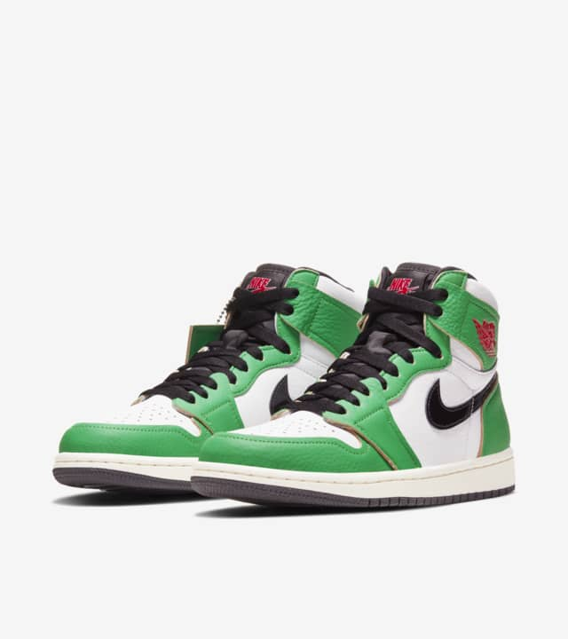
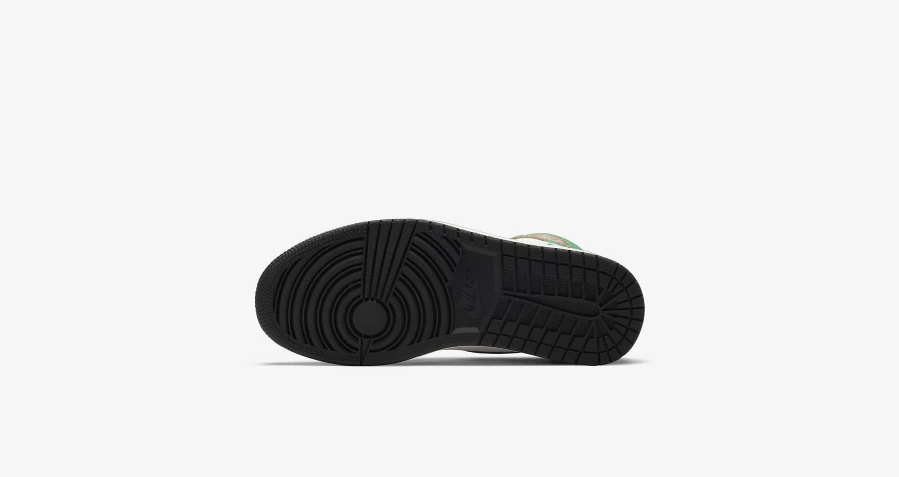
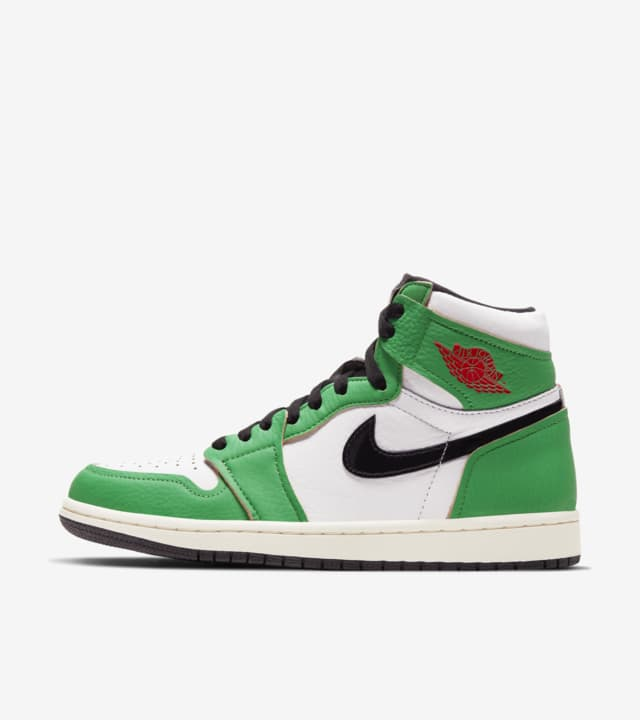
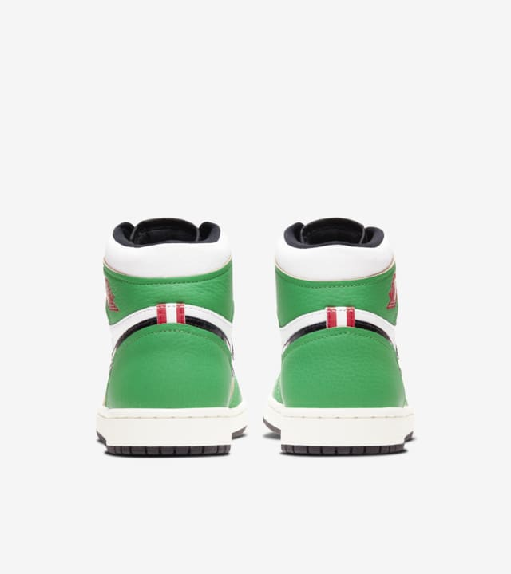
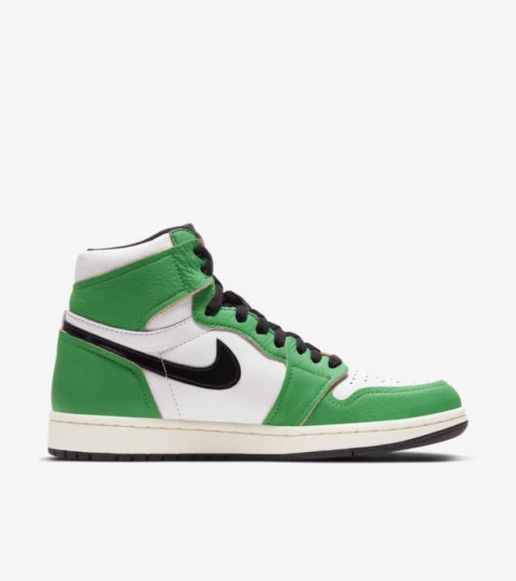

Arrivig in women's and Toddler sizes, there's a new Jordon 1 releasing this week via online raffle only!
Inspired by MJ's iconic 63-point play-off game in BOSTON in 1986, the women's Air Jordon 1 HI OG focuses on progress, not perfection. The shoe flaunts a raw contruction with unstitched eye lets and rich, genuiene matted Lucky Green leather. The shoe also features a parquet floor-inspired insole reminiscent of the old Boston court.
    | Color | Material | Dimension | Weight |
|---|---|---|---|
| Green | Rubber, Polyester, Eva foam, Synthetic Leather, Cotton & Leather | 33 x 19 x 41 cm | 750 g |
Price: R2,617.21
Stock available: 20 sneakers